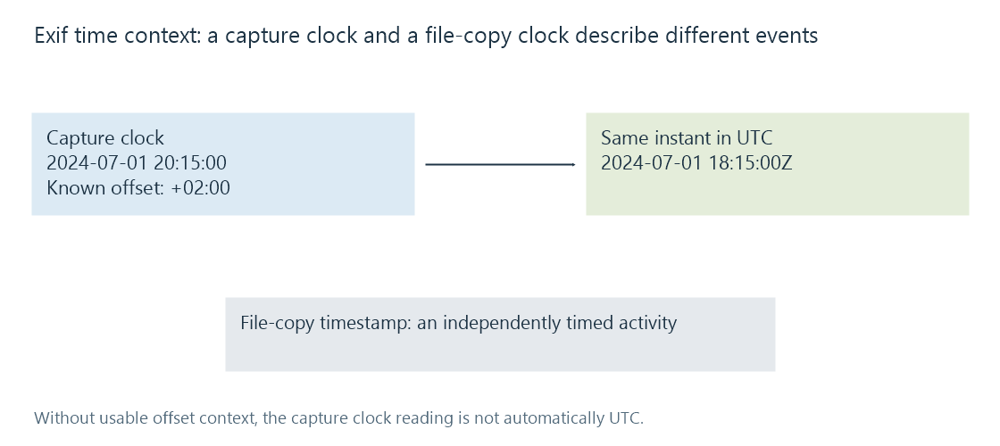

Exif photo metadata
Exif specifies image-associated capture and presentation records, including camera information, capture-time context, orientation and applicable location data.
Exif records information associated with an image's capture and presentation. It can describe camera/exposure facts, capture time, orientation and applicable location information.
CIPA's current catalogue identifies Exif 3.1, published 30 January 2026. The linked tag reference documents ExifTool's interpretation of specific fields; it is implementation documentation alongside the standard's publisher reference.
Capture and filesystem dates describe different events
| Information | Event or relationship |
|---|---|
| DateTimeOriginal | Original image capture context |
| Applicable subsecond/offset fields | Additional precision and time-zone context |
| Image modification metadata | A recorded image-related modification |
| Filesystem creation/modification time | Activities involving this stored file |
Copying a photograph can change filesystem timestamps without changing the depicted event. Exporting another format can also create a new file today from a capture made years earlier.
A library timeline needs a deliberate selection of the date's meaning, rather than assuming every property called “created” names the camera exposure.
An offset can turn a clock reading into an instant
For an invented record:
DateTimeOriginal: 2024:07:01 20:15:00
OffsetTimeOriginal: +02:00
the corresponding UTC instant is 2024-07-01 18:15:00Z.

Without usable offset context, the original clock reading should not automatically be treated as UTC. A camera clock can also have been set incorrectly; correctly parsing its text does not independently verify the real capture event.
Keep any retained precision and offset meaning coherent during conversion. Removing an offset while retaining the same clock numbers changes how a later reader may place the photo.
Location components need their reference
Coordinates can be described using rational degree/minute/second components and direction references.
An invented latitude of 25 degrees, 30 minutes, 0 seconds, with a south reference, corresponds to:
−(25 + 30/60 + 0/3600) = −25.5 degrees.
The components alone do not convey the sign. The associated reference supplies that interpretation.
Other capture/location fields have their own units and meaning. A descriptive place shown in the picture is not automatically the camera's measured location.
Orientation can be presentation data
Exif uses the familiar orientation relationship described in image orientation. A stored grid and its transform work together to establish the intended direction.
Removing the record without normalizing a sideways stored image can change its displayed appearance. Rotating the samples but keeping the old transform can instead cause another rotation.
A photo conversion therefore needs both pixel and metadata decisions. In Emby, distinguish the original record, the applicable library/image reader's supported fields and the generated or displayed result.
Exif is also not the same function as IPTC descriptions or an ICC colour profile. Those records can coexist while supplying different kinds of interpretation.